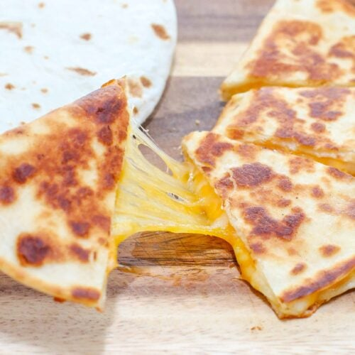

Cheese Quesodilla (or "Cheese Cheese dilla")

Description
If done correctly, this is one of my favorite things to snack on. It's very simple and if you like grilled cheese,
then you'll be able to make this no problem! I'm aware that this way probably isn't the correct way it's done but this
is how I've done it since I was a child and I find that I really enjoy this method. Especially if you toast it just right!
Ingredients
- Tortillas. I use the brand Mission but feel free to go with your favorite. They may not toast the same but you're on your own there.
- Cheese. I prefer shredded but you can use any kind of cheese you enjoy.
- Butter or some other similar item to keep your tortillas from sticking to the pan and that will help brown them.
- *Optional: Any extra's you'd like to add such as meats or veggies.
Steps
- Get all of your items and ingredients together so you aren't running around while your food could burn.
- Butter one side of a tortilla and place the butter side on the pan.
- Add your shredded cheese and other optional ingredients you may have chosen. Note, do not overfill or you may have trouble keeping the contents
together.
- Turn on your stove to a temperature you can stay on top of. I usually do it at this step because the cheese needs to heat up to stick things together anyway and I can do the next step without anything being ruined.
- Butter one side of your other tortilla and place the unbuttered side on the cheese. Now you should have both outside parts of the tortillas buttered
- Now watch your food making sure you don't overcook the tortilla while letting the cheese melt. Then flip the tortilla and repeat this step
- After you have toasted to your liking, you may dish the tortilla on a plate. I usually cut mine into slices with a pizza cutter but feel free to rip yours or eat as is.